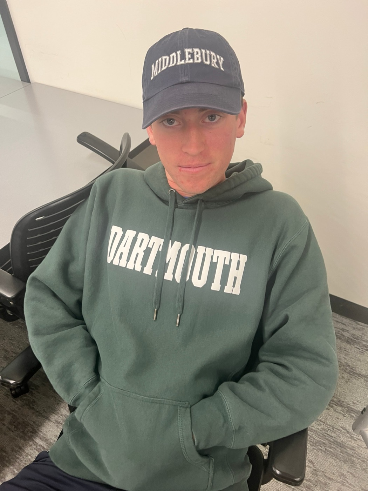

Dual Degree Engineering
Middlebury doesn't have an engineering major, but you can still become an engineer. Many of our members get there through the dual-degree program with Dartmouth's Thayer School of Engineering or Columbia's Fu Foundation School of Engineering.
How the dual degree works
In the dual-degree program you earn two degrees: a B.A. from Middlebury and a Bachelor of Engineering from Dartmouth or Columbia. You spend part of your college career at each school.
- 3-2 plan: three years at Middlebury, then two years at Columbia.
- 2-1-1-1 plan: junior year at Dartmouth, senior year back at Middlebury to graduate, then a fifth year at Dartmouth.
- You'll complete prerequisite math and science courses at Middlebury before applying to Dartmouth and Columbia, so it pays to plan early.
Requirements and deadlines change, so always check with Middlebury's dual-degree advisors and the official program page.
Middlebury's Dartmouth dual-degree page
The Dual Degree Panel
Every year, we plan to host the Dartmouth × Middlebury Engineering Panel. Middlebury duals who have studied at Thayer, or are about to, share what the path is really like.
Our panelists have come from all kinds of majors (math, physics, economics, computer science) and go on to study mechanical and electrical engineering at Dartmouth. You don't need to be a physics major to become an engineer.
It's the best place to ask the questions that aren't on the website: which courses to take and when, how the application went, what the workload at Thayer is like, and how it feels to leave Middlebury for a year.
The panel is open to everyone, from curious first-years to sophomores getting ready to apply. Dates are announced in our GroupMe.
What happens at the panel
Intro to MES
Who we are and what we're building this semester.
Meet the duals
Each panelist shares their major, their engineering track, and how they got there.
Open Q&A
Ask anything about courses, applying, Thayer, and life as a dual.
Makerspace tour
See the tools you can start learning now.
Join the pre-engineering list
Middlebury's pre-engineering distribution list sends out dual-degree info sessions (including Columbia's), deadlines, and advising updates. Sign up with your Middlebury email.
Join the pre-engineering listThinking about Columbia?
Middlebury also has a 3-2 combined plan with Columbia. Info sessions are announced on the pre-engineering list, and our members are happy to talk through both options.
Why MES helps
Hands-on skills
CAD, laser cutting, and 3D printing in the Makerspace give you a head start before your first engineering design course.
Engineering basics
Our bridge competition introduces stress, strain, and structural design in a low-stakes way.
People who've done it
Many of our (past) members are dual-degree students. Ask them anything.